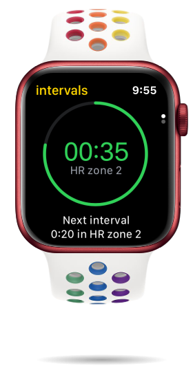
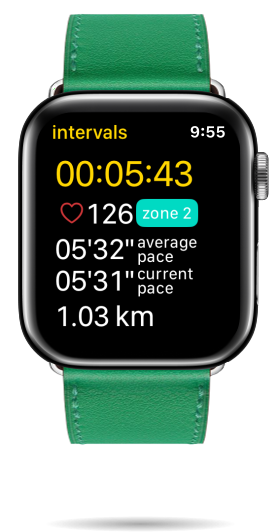
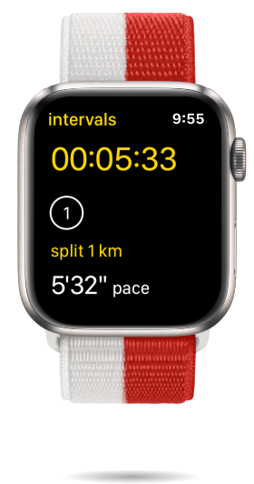
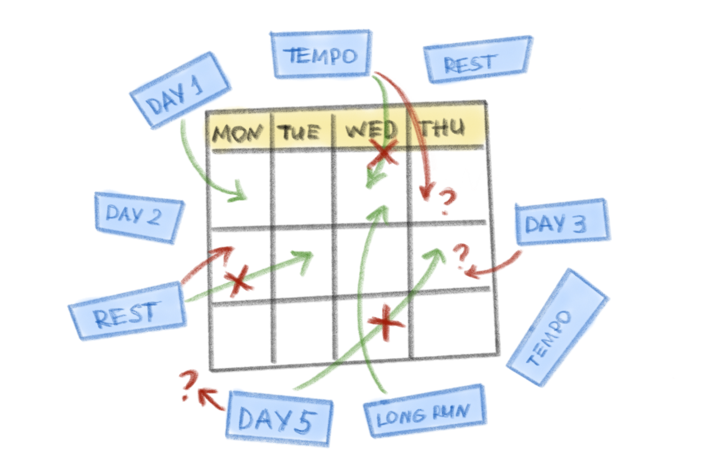
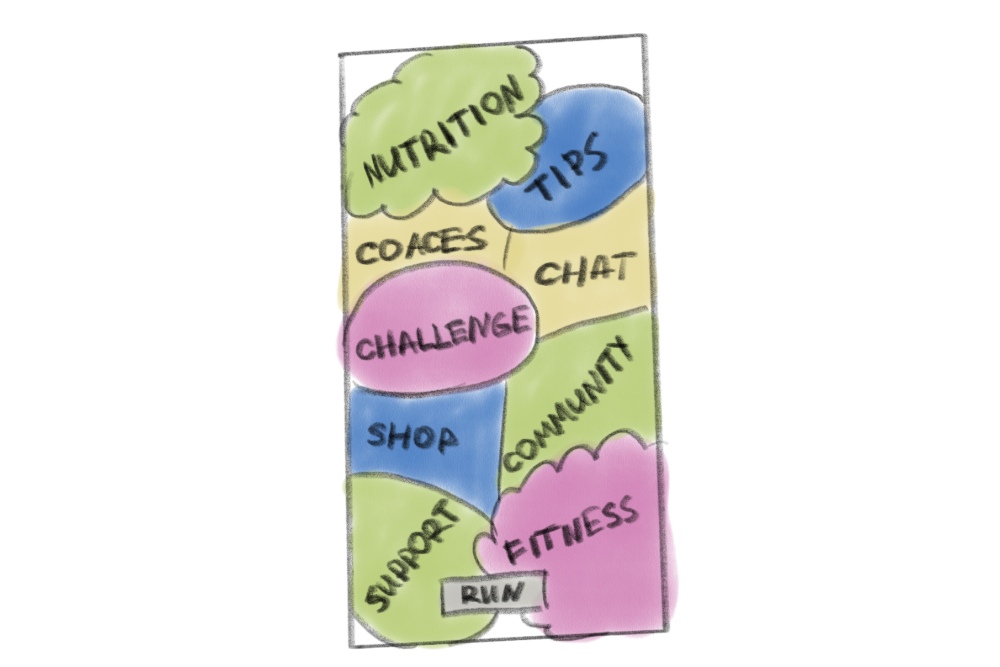
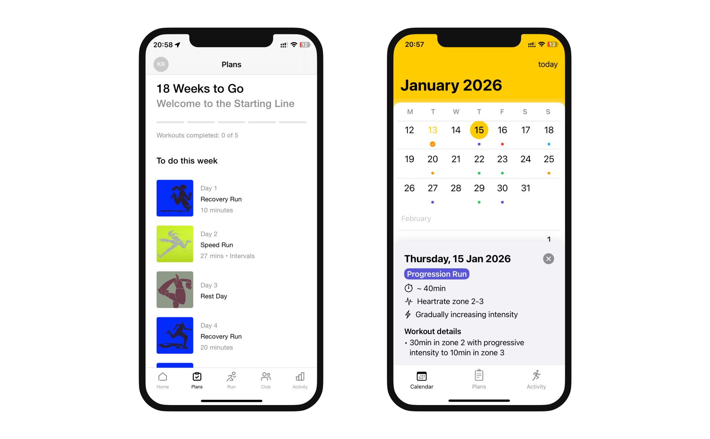
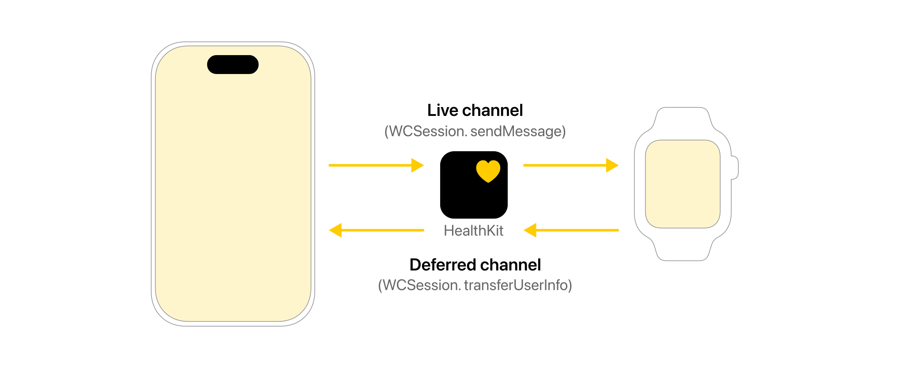
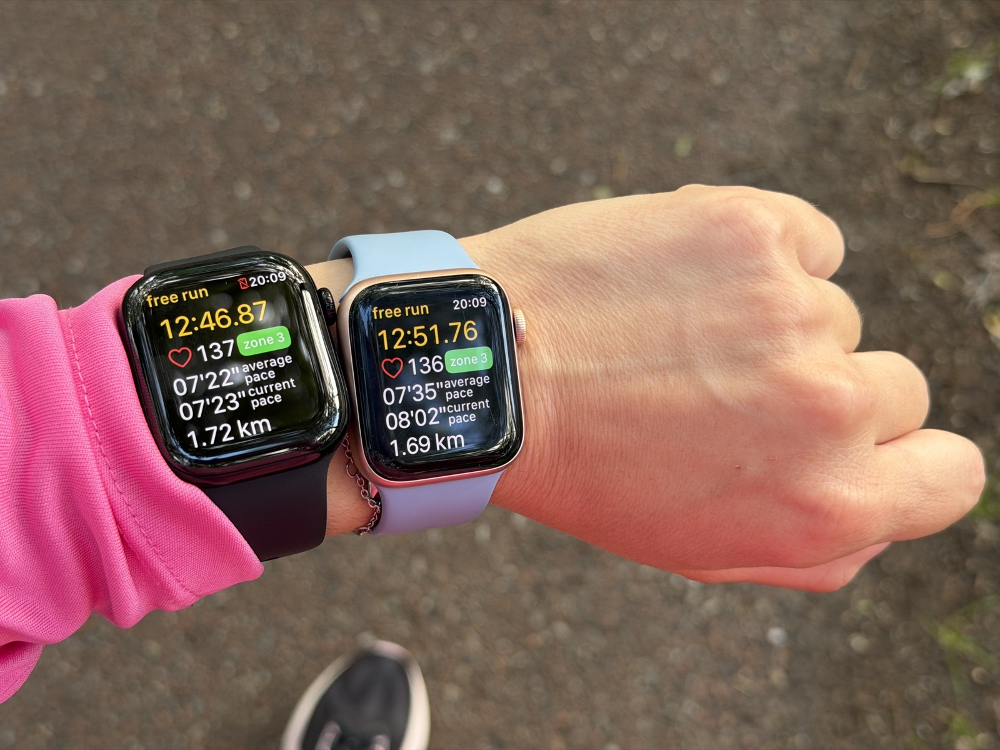

RunPlan
Structured running plans, designed watch-first — a coach on your wrist that tells you what to run today, and why. Privacy‑first: no accounts, no ads.





Overview
RunPlan is a structured running planner for Apple Watch — it keeps your training on your wrist and starts the right workout with a single tap. I co-founded it and design it end-to-end; my engineering co-founder builds the plan algorithms. It's live on the App Store and growing organically.
App Store Connect and Firebase Analytics, 90 days to mid-November 2026.
Why I built RunPlan — a personal pain
Training for the marathon was stressful, and the distance alone was scary. I needed a tool to structure my prep and reduce the anxiety. But while looking for the right app, I kept hitting the same pain points:
- I had to keep the whole plan in my head. Every run started with the same question — what day is it, and what am I supposed to do today? Nike Run Club's "Day 1, Day 2" logic ignored the calendar, so every week: "it's Wednesday, am I on Day 3 or 4?"
- I had to pace the run myself, eyes glued to the watch. Apple Workouts tracks a run but doesn't guide one — so I planned and counted my own intervals, checking the screen constantly to know where I was in the workout.
- Friction before I could even start. Runkeeper hid the plan behind logins and paywalls, and its watch sync kept failing.
- Too much app for a simple need. Runna was genuinely good — but a whole ecosystem and subscription. I wanted a tool, not another platform.
- The closest idea, on the wrong hardware. Garmin does calendar-based plans on the watch — but the setup is fiddly, and it needs a separate ecosystem and a new watch, overkill when I already had an Apple Watch.


Day after day I was deciding what and how to run, filtering a lot of noise to find what actually worked instead of distracting me. That pulled energy from the training itself and wore down my motivation. So I decided to build the tool — Garmin-grade structure with Apple-native smoothness — a personal pain, turned into a product.
Constraints we chose — and why they help
To deliver the best core experience, I narrowed the product scope with three hard rules:
- Apple Watch only: prioritized context of use and app quality over broad market reach.
- No login: maximized time-to-value — removing the sign-up wall entirely eliminates the biggest early drop-off point.
- No social features: avoided feature bloat — we rely on Apple Fitness and Strava for sharing, keeping RunPlan purely focused on the workout.
Key product decisions
Removing decision fatigue: anchoring to a real calendar

Substance over style: the plan has to actually work

Embracing the ecosystem: playing nice with Apple Fitness

Designing for the wrist (watchOS)
Because the run happens on the wrist, the Apple Watch drove the entire UX. The foundation was an invisible loop between devices: RunPlan sets the plan, the Watch guides the live run, Apple Fitness tracks the data, and progress syncs back to the app. Making that loop feel seamless was the hardest technical part.

To design an interface that works while someone is moving, I built it around three principles:
Minimize cognitive load — one question per glance
When you're running hard, doing math or reading busy screens is impossible. So I designed each screen to answer a single question at a glance. For interval training, I built the screen around a few clear cues:
- Time remaining: a dominant countdown tells you exactly how much longer to push — no mental math mid-stride.
- Visual target tracking: a bar shows whether you're hitting your target pace or heart rate — green when you're on target, red when you're not.
- Instant state recognition: the whole screen color-codes your effort — yellow for active intervals, green for rest, white for warm-ups and cool-downs.
The zone also reads from the marker's position, not color alone — so it works for color-blind runners too.
Design for feel
A big frustration with standard trackers is having to break your running form to look at your wrist. So I designed the experience around haptics, not just visuals — a distinct tap when a workout starts, when an interval changes, and when you hit a milestone. The result: you know where you are in the workout without looking down. Since November 2026 the watch also speaks: Voice Cues →
Test on real runs
The simulator only tells you whether the design fits the screen. To know the UX actually works for a runner, I tested everything on a real device, on actual runs — seeing the screens and feeling the haptics on a moving wrist was the only real test.

Does it hold up? In the last 90 days runners started 1,080 workouts on the watch and finished 904 of them, 84%.
Talking to runners
I talked to runners before and after launch — I gave early MVPs to beginners and casual runners to test the basic flow, and asked people how they train.
Most ran with no plan or structure — "I just run when I have time."
Watching other runners showed me a problem I'd have missed on my own. The first time someone opened the app, we asked for location and health access straight away — and I could see people hesitate. They hadn't seen any value yet, so why would they trust us with it? We changed the order: first we ask the goal — run for yourself, or train for a race — then let people build their first plan. We ask for location and health only after that, when tracking a run actually means something.

Where it stands now: of the 1,043 people who opened the app in the last 90 days, 1,003 finished onboarding (96%) and 966 created a plan (93%).
Since launch, runners write to us. The email address in Settings reaches me, and emails come in six languages. I answer each one and usually ask a question back. Their reports became bug fixes that were live within a week, and their requests shipped in November 2026: a kilometers-or-miles setting, heart-rate zones set by hand, a watch-face complication. From a runner's email to a release →
How we ship — two people, AI-native
My co-founder owns the algorithms and heavy logic. I own the product surface — research, UX/UI, the marketing site, App Store, analytics and QA — and I ship design changes straight into the code with AI (Claude Code, Gemini and ChatGPT, from the terminal). When iOS 26 brought Liquid Glass, I redesigned the whole app to it in code.
We release about once a month and re-prioritize by impact, not a fixed roadmap — we simplified onboarding before polishing the activity view, because a smoother first run matters more than a nicer screen deep in the app. No handoff between design and code means two people ship like a bigger team.
Day to day it's a tight loop — idea → build in code → test on a real run → debug → repeat. At this size, debugging is part of the design work. What that looks like in practice: How I work →

Live on the App Store & growing
RunPlan features structured plans ranging from 5K to a full marathon, as well as maintenance routines.
The app is growing organically: 978 first-time installs in the last 90 days, 5.5 times the 90 days before, most of them from App Store search. Of the people who open the app, 93% create a plan.
The weak spot is the step onto the wrist: only 206 of the 966 plan creators, about one in five, started a workout on the watch. I found the cause in our analytics and reworked that hand-off. The fix shipped in November 2026: Four out of five never reach the watch →
What I learned
- A "simple" idea is rarely simple. "A calendar of runs" hid a surprisingly complex plan engine underneath.
- The hardest problems are invisible. Reliable watch–phone sync was more work than any screen — and it's what makes the app feel effortless.
- AI changed our slope. Shipping code with AI alongside design, two of us move well above our size.
- Built isn't adopted. The product was the easier half; getting it to runners is the next thing to crack.
What's next
Two of the three things on the roadmap have shipped since I first wrote this: new plan types and runner analytics and progress, with a race-time forecast. Voice Cues and the run on the Lock Screen shipped in late November 2026. Still ahead: an engagement layer — streaks and a monthly-recap "stories" feature — to turn a plan into a habit people return to.